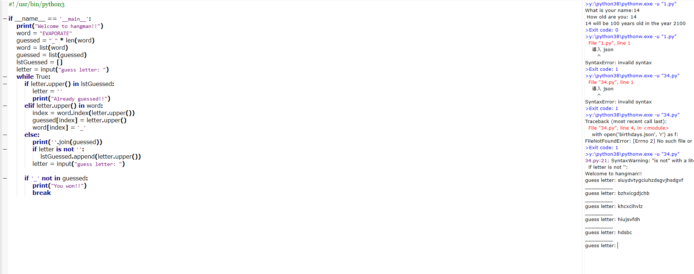
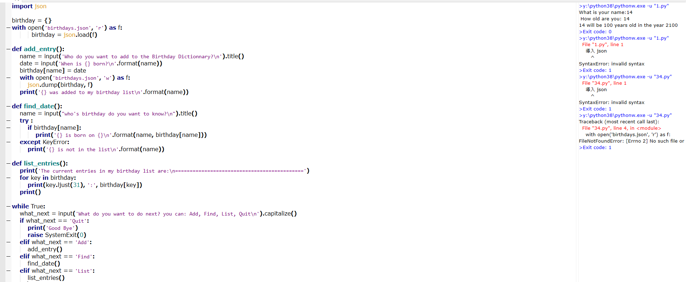

PRACTICE PYTHON <<
Previous Next >> 心得
Guess Letters
Exercise 31 (and Solution)
This exercise is Part 2 of 3 of the Hangman exercise series. The other exercises are: Part 1 and Part 3.
Let’s continue building Hangman. In the game of Hangman, a clue word is given by the program(程序) that the player has to guess, letter by letter. The player guesses one letter at a time until the entire word has been guessed. (In the actual(實際) game, the player can only guess 6 letters incorrectly before losing).
讓我們繼續構建Hangman。在《 Hangman》遊戲中，提示詞是由玩家逐字母猜測的程序給出的。玩家一次猜一個字母，直到猜完整個單詞。（在實際遊戲中，玩家只能輸錯6個字母）。
Let’s say the word the player has to guess is “EVAPORATE”. For this exercise, write the logic that asks a player to guess a letter and displays letters in the clue word that were guessed correctly. For now, let the player guess an infinite(無窮) number of times until they get the entire word. As a bonus, keep track(跟踪) of the letters the player guessed and display a different message if the player tries to guess that letter again. Remember to stop the game when all the letters have been guessed correctly! Don’t worry about choosing a word randomly or keeping track of the number of guesses the player has remaining - we will deal with those in a future exercise.
假設玩家必須猜出的單詞是“ EVAPORATE”。在本練習中，編寫要求玩家猜出字母並在提示詞中顯示正確猜出的字母的邏輯。現在，讓玩家猜無限次，直到獲得完整的單詞為止。作為獎勵，跟踪玩家猜出的字母，如果玩家嘗試再次猜出該字母，則顯示不同的消息。記住正確猜出所有字母后，停止遊戲！不必擔心隨機選擇一個單詞或跟踪玩家剩餘的猜測數-我們將在以後的練習中處理這些猜測。
An example interaction can look like this:
>>> Welcome to Hangman!
_ _ _ _ _ _ _ _ _
>>> Guess your letter: S
Incorrect!
>>> Guess your letter: E
E _ _ _ _ _ _ _ E
...
And so on, until the player gets the word.

Birthday Json 
Exercise 34 (and Solution)
This exercise is Part 2 of 4 of the birthday data exercise series. The other exercises are: Part 1, Part 3, and Part 4.
In the previous exercise we created a dictionary of famous scientists’ birthdays. In this exercise, modify your program from Part 1 to load the birthday dictionary from a JSON file on disk, rather than having the dictionary defined in the program.
Bonus: Ask the user for another scientist’s name and birthday to add to the dictionary, and update the JSON file you have on disk with the scientist’s name. If you run the program multiple times and keep adding new names, your JSON file should keep getting bigger and bigger.
在上一個練習中，我們創建了著名科學家生日字典。在本練習中，請修改第1部分中的程序，以從磁盤上的JSON文件加載生日字典，而不是在程序中定義字典。
獎勵：向用戶詢問另一個科學家的名字和生日，以添加到詞典中，並使用科學家的名字更新磁盤上的JSON文件。如果您多次運行該程序並繼續添加新名稱，那麼JSON文件應該會越來越大。
In a previous exercise we talked about how to save information to a .txt file on disk, but in this exercise we are talking about writing a different kind of file format called JSON.
The JSON file format was developed in the early 2000s as a standard for how web servers would pass data back and forth. It is still used for web server communication today, and it conveniently is also a way we can store dictionary-like data in a file on disk. The JSON format specifies a way to serialize (turn into a string) a dictionary or list, which then means that string can be written to disk or passed to another application. JSON is meant to store dictionary-like data both in a readable way for humans, and in a compact way that can be read by computers. Because it is a standard format, you can write JSON in one language and read JSON from another language to effectively pass information between the two programs or applications. You can read more about the history of JSON on the wikipedia article.
在上一個練習中，我們討論瞭如何將信息保存到磁盤上的.txt文件中，但是在本練習中，我們正在討論編寫另一種稱為JSON的文件格式。
JSON文件格式是在2000年代初期開發的，它是Web服務器如何來回傳遞數據的標準。如今，它仍然用於Web服務器通信，並且它也是我們可以將類似字典的數據存儲在磁盤上的文件中的一種便捷方式。JSON格式指定了一種對字典或列表進行序列化（轉換為字符串）的方式，這意味著可以將字符串寫入磁盤或傳遞給另一個應用程序。JSON旨在以人類可讀的方式以及計算機可以讀取的緊湊方式存儲類似字典的數據。因為它是一種標準格式，所以您可以用一種語言編寫JSON並從另一種語言讀取JSON，以在兩個程序或應用程序之間有效地傳遞信息。您可以在上閱讀有關JSON歷史的更多信息維基百科文章。
Here is an example of JSON:
{
"name": "Michele",
"shirt_color": "blue",
"laptops": [
{
"brand": "Lenovo",
"operating_system": "Ubuntu"
},
{
"brand": "Apple",
"operating_system": "OSX"
}
],
"has_a_dog": false,
"items_on_desk": ["mug", "pen", "monitor"]
}
Notice how you can mix dictionaries and lists. In this example the top-level container is a dictionary, with the keys name, shirt_color, laptops, has_a_dog, and items_on_desk. The keys can be lists, strings, booleans, or other dictionaries. Usually you don’t write JSON by hand (but it is very readable so you easily could). One of my favorite tools to test whether you’ve written valid JSON is this free JSON validator - just paste your JSON in there and it tells you if it will be read by a program that understands JSON.
There is a built-in Python library for reading and writing JSON files, so you don’t have to worry about how your dictionaries and lists are going to be turned into the right format!
As long as the data you want to store is either a dictionary or a list of dictionaries, writing JSON is straightforward. First, import the json library (no installation needed, it is built in to Python) and initialize some dictionary:
注意如何混合使用字典和列表。在這個例子中頂層容器是一個字典，與鍵name，shirt_color，laptops，has_a_dog，和items_on_desk。鍵可以是列表，字符串，布爾值或其他字典。通常，您不需要手工編寫JSON（但它具有很高的可讀性，因此您可以輕鬆編寫）。這個免費的JSON驗證程序是我最喜歡的測試您是否已編寫有效JSON的工具之一-只需將JSON粘貼在其中，它就會告訴您是否會由理解JSON的程序讀取。
有一個內置的Python庫用於讀寫JSON文件，因此您不必擔心字典和列表將如何轉換為正確的格式！
只要您要存儲的數據是字典還是詞典列表，編寫JSON就很簡單。首先，導入json庫（無需安裝，它內置在Python中）並初始化一些字典：
import json
info_about_me = {
"name": "Michele",
"has_a_dog": False
}
Then, to save your dictionary to disk you need to open a file and use the json.dump() method. Remember to use the w flag when opening a file for writing:
然後，要將字典保存到磁盤，您需要打開一個文件並使用該json.dump()方法。w打開文件進行寫入時，請記住使用該標誌：
with open("info.json", "w") as f:
json.dump(info_about_me, f)
And you will have saved a file called info.json in the same directory as your Python program. The dictionary info_about_me will be saved to disk, but the variable name will not be. Basically, JSON won’t remember the name of the variable you saved your dictionary in. If you open the file with a text editor (Notepad++, vim, emacs, Sublime Text, etc.), you will just see:
您將info.json在與Python程序相同的目錄中保存一個名為的文件。詞典info_about_me將保存到磁盤，但變量名不會。基本上，JSON不會記住保存字典的變量的名稱。如果使用文本編輯器（Notepad ++，vim，emacs，Sublime Text等）打開文件，則只會看到：
{
"name": "Michele",
"has_a_dog": false
}
Alternatively, you can also manually create a JSON file and type JSON directly into it (passing it through the JSON validator of course!). Just save the file with the .json extension and copy the dictionary directly into the file.
Now I can use the information about me that I saved to disk in another program (written in a completely different file) to do something like printing a message. When I saved the JSON file, the variable name of my dictionary was not saved with it, so when I load the JSON file I need to save it into a variable. I can use the same json library to do this:
另外，您也可以手動創建一個JSON文件，然後直接在其中鍵入JSON（當然，還要通過JSON驗證器！）。只需保存帶有.json擴展名的文件，然後將字典直接複製到文件中即可。
現在，我可以使用保存在另一個程序中的有關我的信息（以完全不同的文件編寫）來執行類似打印消息的操作。當我保存JSON文件時，字典的變量名並未隨之保存，因此，當我加載JSON文件時，需要將其保存到變量中。我可以使用相同的json庫來執行此操作：
import json
with open("info.json", "r") as f:
info = json.load(f)
if info["has_a_dog"]:
print("{} has a dog".format(info["name"]))
else:
print("{} does not have a dog".format(info["name"]))
When this program runs, the output should be:
運行該程序時，輸出應為：
Michele does not have a dog
Notice how when I loaded the JSON file I used a different name than when I saved it - this is because the variable names don’t get saved together with the JSON data, so you do not have to use the same variable names to save and load JSON.
Now that you know about JSON, you can use it to do a number of things:
- Save data to disk that can be shared by people and programs.
- Constantly update data that needs to be shared by re-saving and re-load to disk.
- Save data from a program that a human can read and manually check and fix errors.
請注意，加載JSON文件時使用的名稱與保存時使用的名稱不同-這是因為變量名稱不會與JSON數據一起保存，因此您不必使用相同的變量名稱進行保存和加載JSON。
現在，您已經了解了JSON，可以使用它來做很多事情：
- 將數據保存到可以由人員和程序共享的磁盤。
- 不斷更新需要通過重新保存並重新加載到磁盤的數據。
- 保存人類可以讀取的程序中的數據，並手動檢查和修復錯誤。

PRACTICE PYTHON <<
Previous Next >> 心得